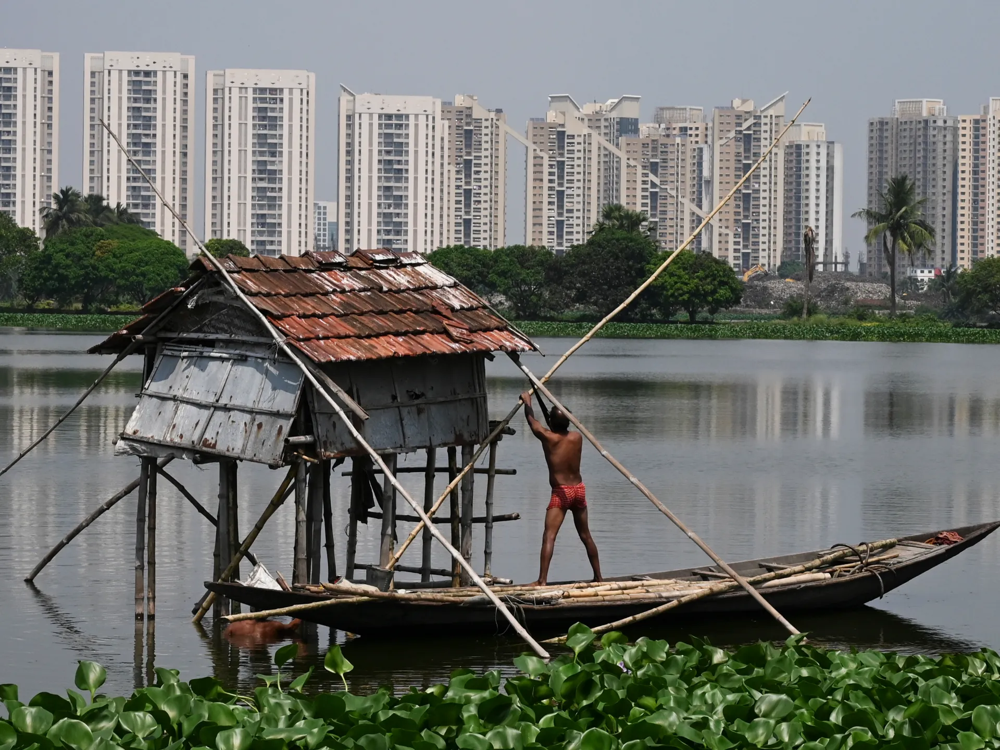
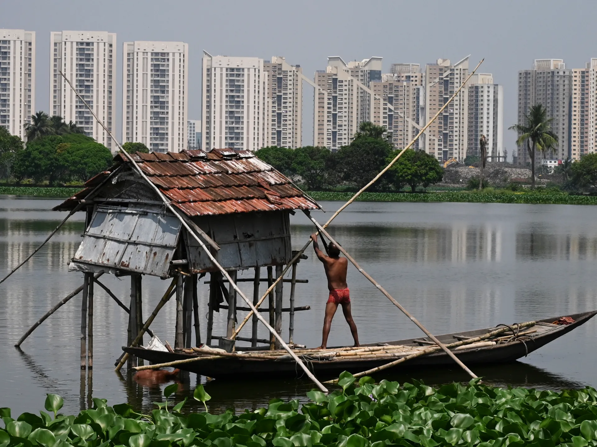

Smt. Mamata Banerjee
Hon'ble Chief Minister, West Bengal

Shri Firhad Hakim
Hon'ble Mayor of Kolkata

Project Director
Project Director of KMC SHARP
Hon'ble Chief Minister, West Bengal
Hon'ble Mayor of Kolkata
Project Director of KMC SHARP

Insights from the West Bengal Urban Development Forum at the Biswa Bangla Convention Centre, Kolkata.
 

The Kolkata Municipal Corporation (KMC) SHARP is responsible for civic infrastructure and administration in the city of Kolkata, West Bengal. With a focus on urban development, sanitation, water supply, and citizen welfare, KMC ensures efficient delivery of essential services to residents across the city.
Kolkata Municipal Corporation delivers essential services across all wards to ensure better living conditions for residents of Kolkata.
Ensuring clean and consistent drinking water for all households across the city.
Efficient solid waste collection, disposal, and recycling to keep the city clean.
Medical clinics, immunization drives, and sanitation programs for public health.
Construction and maintenance of city roads for better transport and connectivity.
Installation and maintenance of energy-efficient lights across public areas.
Developing and maintaining urban parks to improve city greenery and leisure.
Providing construction approvals and regulating urban development policies.
Maintaining underground sewer and drainage for flood and rainwater control.